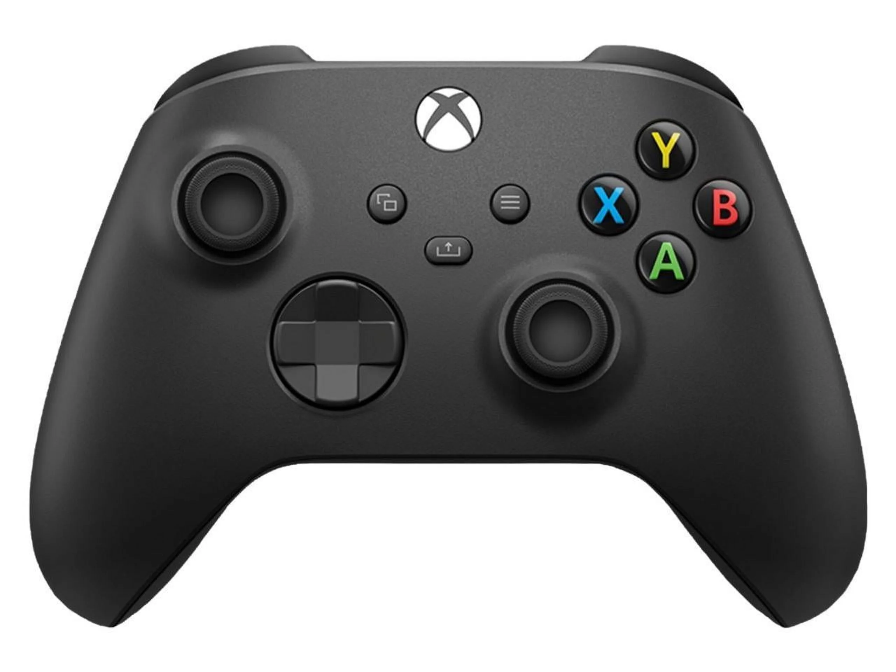

Control de PlayStation 5
El DualSense de PS5 ofrece una experiencia de juego revolucionaria con sus características únicas.

Control de Xbox
El control de Xbox combina comodidad y rendimiento para una experiencia de juego óptima.
Comparativa
DualSense
- Innovación en vibración y respuesta táctil
- Gatillos adaptativos para mayor inmersión
- Menor compatibilidad en PC
Xbox
- Ergonomía mejorada y mayor comodidad
- Alta compatibilidad con PC y móviles
- Sin respuesta háptica avanzada